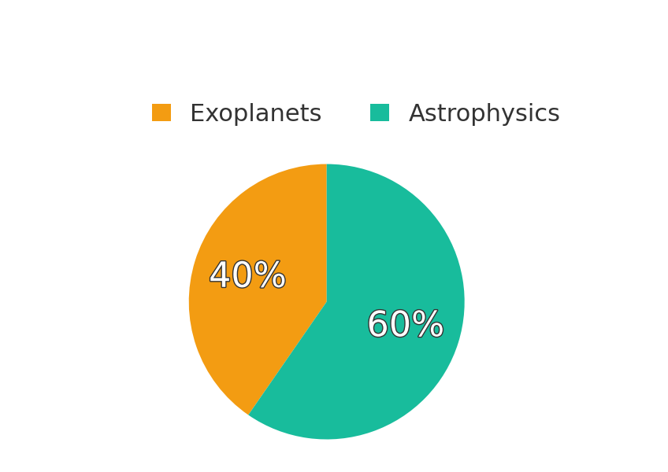

We request that scientific publications using data obtained from the TESS project include one of the following acknowledgments:
This paper includes data collected by the Kepler mission. Funding for the Kepler mission is provided by the NASA Science Mission directorate.
This paper includes data collected by the K2 mission. Funding for the K2 mission is provided by the NASA Science Mission directorate.
Publication database
The Guest Investigator office curates a list of scientific publications pertaining to TESS. The database contains 32 publications, of which 22 are peer-reviewed. It demonstrates the important impact of TESS data on astronomical research.
You can access the full publication list:
Or seach by topic:
If you spot an error in the database, such as a missing entry, please get in touch or open an issue in the GitHub repository of the database.
Last update: 15 May 2017.
Breakdown by year & mission
The graph below shows the number of publications as a function of year.

Breakdown by subject
Both TESS data have been used for scientific applications that reach far beyond exoplanet research. While 19 works relate to exoplanets (59%), a total of 13 pertain to other areas of astrophysics (41%).

Most-cited publications
TESS publications have cumulatively been cited 354 times. The list below shows the most-cited publications, based on the citation count obtained from NASA ADS.
-
TRANSITING EXOPLANET SURVEY SATELLITE (TESS)
Ricker, George R., Winn, Joshua N., Vanderspek, Roland, et al.
2015JATIS...1a4003R 131 citations -
THE TRANSITING EXOPLANET SURVEY SATELLITE: SIMULATIONS OF PLANET DETECTIONS AND ASTROPHYSICAL FALSE POSITIVES
Sullivan, Peter W., Winn, Joshua N., Berta-Thompson, Zachory K., et al.
2015ApJ...809...77S 58 citations -
CHARACTERIZING TRANSITING PLANET ATMOSPHERES THROUGH 2025
Cowan, N. B., Greene, T., Angerhausen, D., et al.
2015PASP..127..311C 26 citations -
UNDERSTANDING THE EFFECTS OF STELLAR MULTIPLICITY ON THE DERIVED PLANET RADII FROM TRANSIT SURVEYS: IMPLICATIONS FOR KEPLER, K2, AND TESS
Ciardi, David R., Beichman, Charles A., Horch, Elliott P., et al.
2015ApJ...805...16C 20 citations -
THE TRANSITING EXOPLANET SURVEY SATELLITE MISSION
Ricker, G. R.
2014JAVSO..42..234R 19 citations -
THE K2-TESS STELLAR PROPERTIES CATALOG
Stassun, Keivan G., Pepper, Joshua A., Oelkers, Ryan, et al.
2014arXiv1410.6379S 16 citations -
A SURVEY FOR VERY SHORT-PERIOD PLANETS IN THE KEPLER DATA
Jackson, Brian, Stark, Christopher C., Adams, Elisabeth R., et al.
2013ApJ...779..165J 14 citations -
RADIAL VELOCITY PROSPECTS CURRENT AND FUTURE: A WHITE PAPER REPORT PREPARED BY THE STUDY ANALYSIS GROUP 8 FOR THE EXOPLANET PROGRAM ANALYSIS GROUP (EXOPAG)
Plavchan, Peter, Latham, Dave, Gaudi, Scott, et al.
2015arXiv150301770P 13 citations -
TRANSITING EXOPLANET SIMULATIONS WITH THE JAMES WEBB SPACE TELESCOPE
Batalha, Natasha, Kalirai, Jason, Lunine, Jonathan, et al.
2015arXiv150702655B 11 citations -
ASTEROSEISMOLOGY OF RED GIANTS: FROM ANALYSING LIGHT CURVES TO ESTIMATING AGES
Davies, G. R., Miglio, A.
2016AN....337..774D 9 citations -
PLANET PACKING IN CIRCUMBINARY SYSTEMS
Kratter, Kaitlin M., Shannon, Andrew
2014MNRAS.437.3727K 8 citations -
THE ASTEROSEISMIC POTENTIAL OF TESS: EXOPLANET-HOST STARS
Campante, T. L., Schofield, M., Kuszlewicz, J. S., et al.
2016ApJ...830..138C 7 citations -
SPACEINN HARE-AND-HOUNDS EXERCISE: ESTIMATION OF STELLAR PROPERTIES USING SPACE-BASED ASTEROSEISMIC DATA
Reese, D. R., Chaplin, W. J., Davies, G. R., et al.
2016A&A...592A..14R 7 citations -
TRANSIT LIGHT CURVES WITH FINITE INTEGRATION TIME: FISHER INFORMATION ANALYSIS
Price, Ellen M., Rogers, Leslie A.
2014ApJ...794...92P 5 citations -
COMBINING PHOTOMETRY FROM KEPLER AND TESS TO IMPROVE SHORT-PERIOD EXOPLANET CHARACTERIZATION
Placek, Ben, Knuth, Kevin H., Angerhausen, Daniel
2016PASP..128g4503P 3 citations -
THE EB FACTORY PROJECT. II. VALIDATION WITH THE KEPLER FIELD IN PREPARATION FOR K2 AND TESS
Parvizi, Mahmoud, Paegert, Martin, Stassun, Keivan G.
2014AJ....148..125P 3 citations -
COMPARATIVE HABITABILITY OF TRANSITING EXOPLANETS
Barnes, Rory, Meadows, Victoria S., Evans, Nicole
2015ApJ...814...91B 2 citations -
ORBITAL MOTION DURING GRAVITATIONAL LENSING EVENTS
Di Stefano, Rosanne, Esin, Ann
2014arXiv1412.7675D 1 citations -
CEPHEIDS WITH THE EYES OF PHOTOMETRIC SPACE TELESCOPES
Molnár, L., Pál, A., Plachy, E.
2017arXiv170302421M 1 citations -
ON THE STATISTICAL PROPERTIES OF THE LOWER MAIN SEQUENCE
Angelou, George C., Bellinger, Earl P., Hekker, Saskia, et al.
2017ApJ...839..116A 0 citations
Most-active authors
The entries in the publication database have been authored and co-authored by a total of 194 unique author names. Here we list the most-active authors, defined as those with six or more first-author publications in our database.